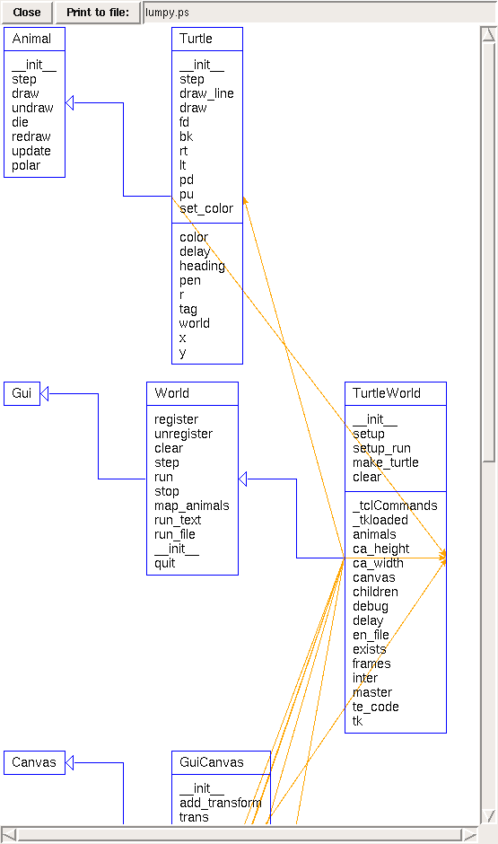

Lumpy: UML in Python
Download Lumpy
Lumpy is a Python module that generates UML diagrams (currently object and class diagrams) from a running Python program. It is similar to a graphical debugger in the sense that it generates a visualization of the state of a running program, but it is different from a debugger in the sense that it tries to generate high-level visualizations that are compliant (at least in spirit) with standard UML.
There are other tools that generate UML diagrams of Python programs, but they are based on analysis of the program text. Because Lumpy works at run time, it is able to extract more information about the relationships between classes, especially HAS-A relationships.
There are three audiences for this module: teachers, students and software engineers. Teachers can use Lumpy to generate figures that demonstrate a model of the execution of a Python program. Students can use Lumpy to explore the behavior of the Python interpreter. Software engineers can use Lumpy to extract the structure of existing programs by diagramming the relationships among the classes, including classes defined in libraries and the Python interpreter.
As an example, consider the following Python statements:
x = [1, 2, 3] y = x z = list(x)
After these statements execute, do x and y refer to the same value? What about x and z? Lumpy shows visually that the answer to the first question is yes, and the answer to the second question is no:

The green boxes represent the lists. The blue box represents a stack frame, which is labelled __main__ because the variables were declared in the top-level scope, which is named __main__.
To use Lumpy, users have to import the Lumpy module and then add a few lines to the program they want to visualize. For example, here is the program that generated the previous figure:
# create a Lumpy object and capture reference state import Lumpy lumpy = Lumpy.Lumpy() lumpy.make_reference() # run the test code x = [1, 2, 3] y = x z = list(x) # draw the current state (relative to the last ref) lumpy.object_diagram()
Students can write test code to answer basic questions about Python semantics; they can also use Lumpy to instrument their own code for debugging. Maybe more important, Lumpy helps students develop a model of the execution of a program and a language for talking about programs and data structures.
Here is a more substantial diagram that shows the relationships among the objects in TurtleWorld, which is another component of Swampy.

As in the previous diagram, blue boxes are frames and green boxes are lists. Red boxes represent objects and purple boxes represent dictionaries (the one above happens to be empty).
Lumpy also draws UML class diagrams. Here is a class diagram for TurtleWorld.

Each class is represented with a box that lists methods, class variables and instance variables. The blue arrows show inheritance relationships; the orange arrows show "contains" (or "has-a") relationships.
Here is the program that generated the previous two examples:
from World import * import Lumpy lumpy = Lumpy.Lumpy() lumpy.make_reference() world = TurtleWorld() bob = Turtle(world) lumpy.object_diagram() lumpy.class_diagram()
Lumpy uses a simple graph layout algorithm, but it gives users the ability to drag and drop diagram components to improve readability.
Lumpy is reflexive; it is a program that examines and displays its own state. This idea is mind-stretching, and Lumpy is a fun way to introduce it to students at an early stage.
Download Lumpy
Lumpy is part of the Swampy suite; if you want the whole suite, here are the Installation Instructions. If you just want Lumpy, follow these instructions instead.